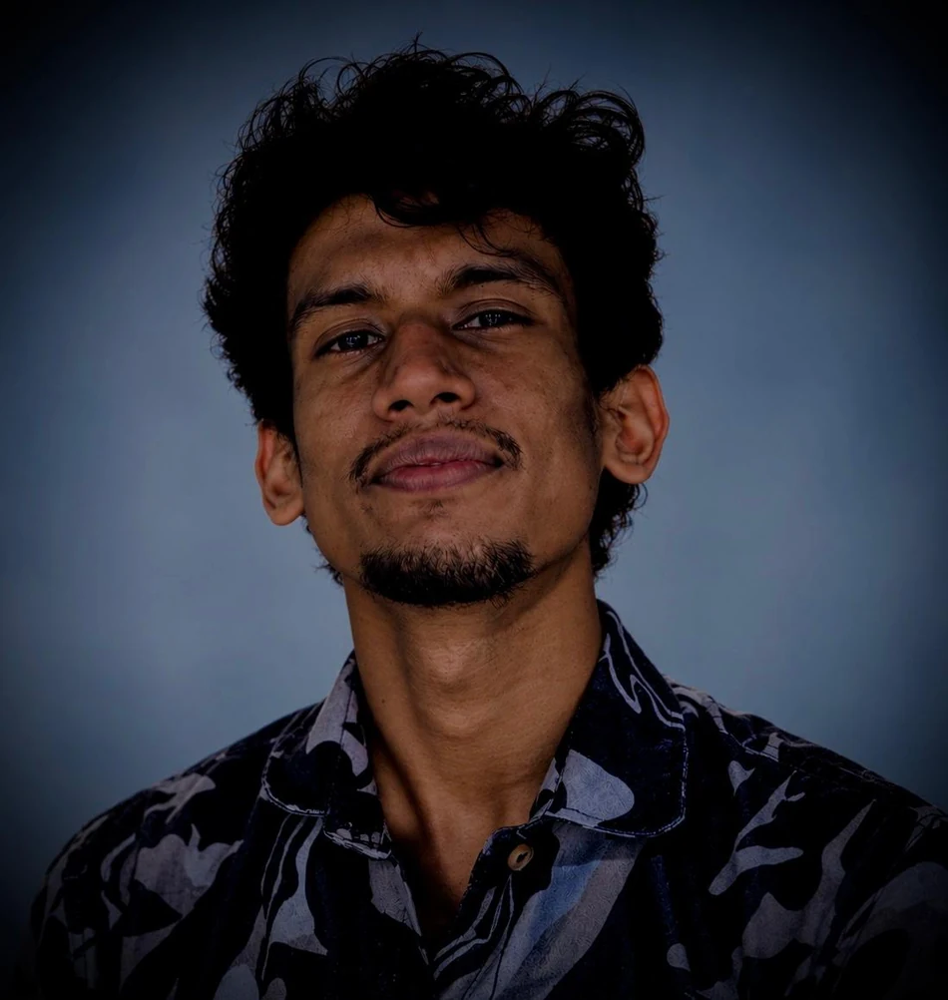
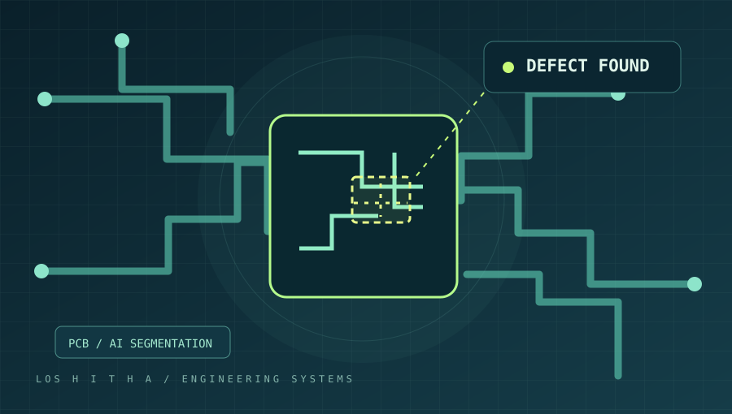
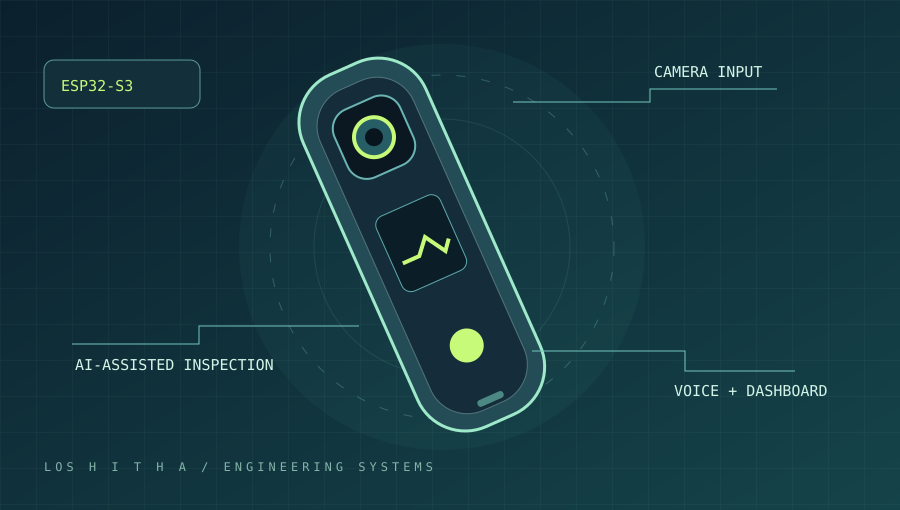
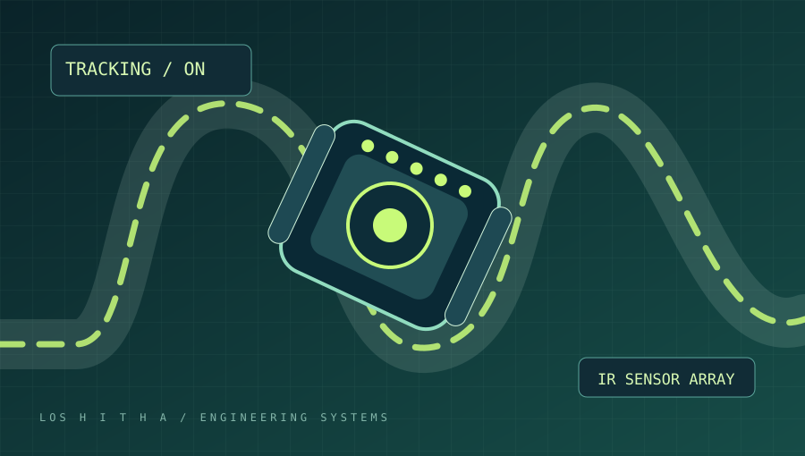
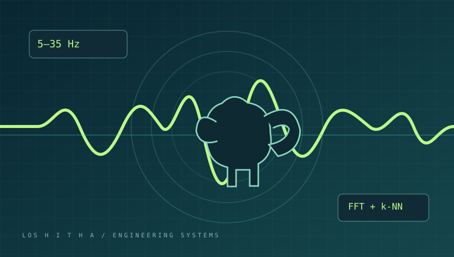
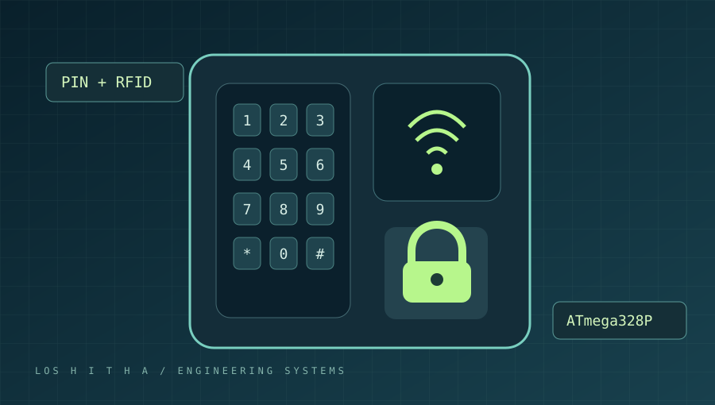

AI & Computer Vision
Machine learning, image analysis and intelligent inspection systems.
Hi, I'm Loshitha Udana — an Electrical & Electronic Engineering undergraduate exploring the intersection of AI, computer vision, embedded systems and real-world problem solving.

01 / GET TO KNOW ME
I enjoy taking challenging ideas from theory to working prototypes — combining software intelligence with electronics and thoughtful engineering.
I'm pursuing a BSc Engineering degree in Electrical and Electronic Engineering at the University of Peradeniya, Sri Lanka. My interests span machine learning, computer vision, signal processing, microcontrollers, and electronics product development.
Through university projects and team-based programming competitions, I've strengthened my practical engineering, collaboration, and analytical problem-solving skills. My current work includes PCB defect detection research and an AI-powered electronics inspection assistant.
Beyond engineering, I teach G.C.E. A/L Combined Mathematics in Sinhala medium — something that keeps me connected to explaining complex ideas in clear, accessible ways.
Machine learning, image analysis and intelligent inspection systems.
ESP32, AVR, electronics, sensors and firmware integration.
Experimentation, validation and practical technology development.
Algorithms, data structures and collaborative problem solving.
02 / SELECTED WORK
A selection of hands-on projects across research, artificial intelligence, embedded systems and engineering.

01 / RESEARCH● ONGOINGFINAL YEAR RESEARCH · COMPUTER VISION
Developing a computer vision approach for identifying defects on bare printed circuit boards, with a focus on segmentation, robust image preprocessing and deployment on constrained hardware.
Explore research
02 / PRODUCT● ONGOINGEMBEDDED AI · PRODUCT DEVELOPMENT
A developing portable electronics-inspection assistant combining an ESP32-S3 camera/microphone device, AI backend, dashboard and mobile companion app. Hardware validation is in progress.
View repository
03 / ROBOTICS✓ COMPLETEDROBOTICS · CONTROL
Developed a sensor-based robot for the GP118 competition. The team's robot secured first place among more than 60 competing teams, as documented in the repository.
View repository
04 / SIGNALS✓ COMPLETEDMACHINE LEARNING · SIGNAL PROCESSING
An ESP32-based prototype that extracts acoustic signal features and uses k-nearest neighbours classification, paired with a Python interface for monitoring and analysis.
View repository
05 / EMBEDDED✓ COMPLETEDAVR ASSEMBLY · EMBEDDED SECURITY
A PIN + RFID authentication system implemented with ATmega328P and AVR assembly, integrating a keypad, MFRC522 reader, LCD, lock control and lockout logic.
View repository03 / RESEARCH IN PROGRESS
My final year research explores automated defect detection for printed circuit boards. The work investigates image preprocessing, deep feature extraction and efficient on-device inference to support practical inspection workflows.
04 / BEYOND THE CLASSROOM
National-level finalist selections, algorithmic coding events and engineering challenges — with supporting certificates and links where available.
Overall placement
Jaffna Coding final
Overall placement
Final round
Reported placement
Algorithmic competition
Sri Lanka rank
World rank: 894
Selected for physical round · Team BinaryBrains_UOP
Final round participant
Participated · Team Binary Brains
Participated · Sri Lanka rank 71; world rank 894 (reported)
Selected for national semifinal round
Participated
05 / FOUNDATION
A strong academic foundation, applied projects and a passion for sharing knowledge.
UNDERGRADUATE DEGREE · EXPECTED 2027
University of Peradeniya · Faculty of Engineering
SECONDARY EDUCATION
Kandy, Sri Lanka
TEACHING & MENTORSHIP
Helping G.C.E. Advanced Level students learn Combined Mathematics in Sinhala medium.
06 / LET'S TALK
I'm interested in meaningful engineering challenges, AI/embedded opportunities, research conversations, and educational collaborations.
loshithaudana66@gmail.com